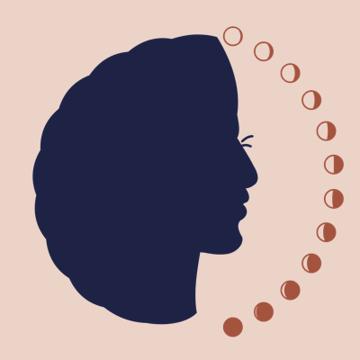

Separate brands, one studio
Initiatives
Alimayu Studio builds initiatives around real needs. Each one has its own name and its own look, with the same research, education, and care behind it.


Postpartum health and wellness
Visit →
The Postmoon Club
A community for the mother, through the twelve months after birth. Plain facts, a free map for her support circle, and a monthly mail club.
F&HCREED model
Faith communities and child development
Visit →
FAAITH and HOPE
A faith community and academic partnership that brings the science of positive childhood experiences into the places families already trust, starting with the baby blessings and ministries of local congregations.